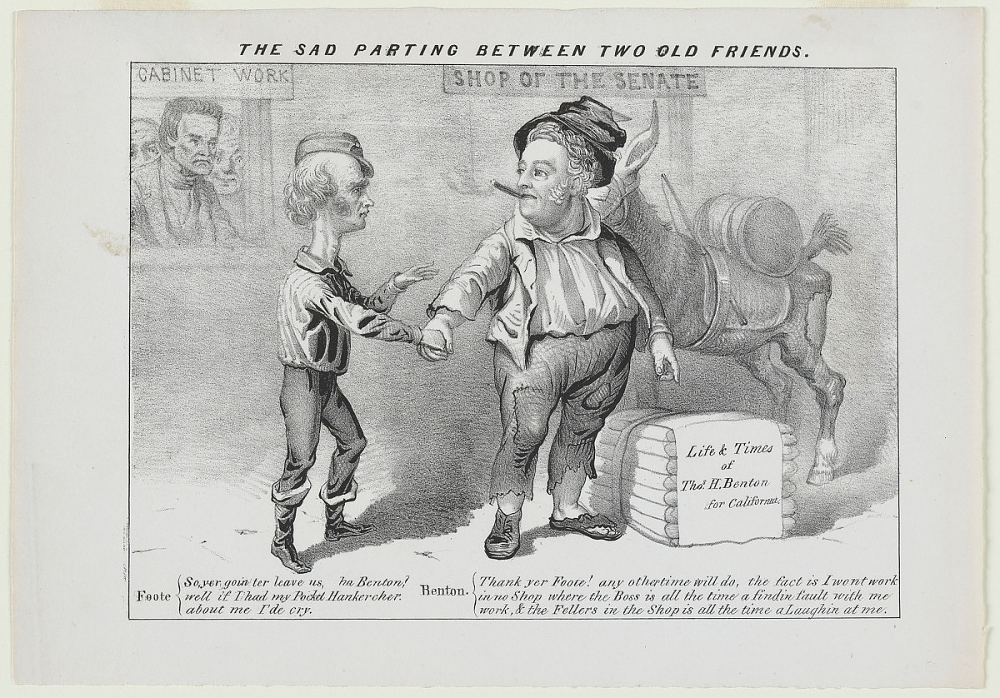

Places to get ebooks
Apart from your local library (for example Brisbane City Council free ebooks and audiobooks), here are some useful sites:
- Project Gutenberg -- the same guy that invented the movable type printing press also made this website for distributing books that are out of copyright, I guess.
- Standard EBooks -- beautifully formatted free ebooks.
- Open Library -- part of the Internet Archive. (which is great!)
- Google ebook store - access to the topselling free ebooks
- Anna's Archive -- "the largest truly open library in human history" (because if we include the history of ants, whales or bacterium, theirs are much bigger)
- More datasets listed at Anna's Archive, and mirrors at https://annas-archive.org, https://annas-archive.gs, https://annas-archive.se
- There is a system called Library Genesis or LibGen, currently available at https://libgen.is/ which allows you to find ebooks. It's similar to sci-hub.
- Z-Lib is kind of a fork of Library Genesis/
Free audio books at:
And:
On iOS, for those of us addicted to convenience, the Oldio app provides free Audible-style listening to Librivo
—hn comments
- "Non-resident" library cards - as a way to get access in overdrive to more collections.
- https://wiki.mobileread.com/wiki/EBook_Lending_Libraries#Widely_Accessible_Libraries_and_Subscription_Services
And another thing is the smithsonian open access:
...where you can download, share, and reuse millions of the Smithsonian's images-right now, without asking. With new platforms and tools, you have easier access to more than 3 million 2D and 3D digital items from our collections-with many more to come. This includes images and data from across the Smithsonian's 19 museums, nine research centers, libraries, archives, and the National Zoo
(I'm not really sure where/how to catalog that? When will I need this? It has awesome old pictures, and machines and diagrams and drawings of animals and places and buildings...)

Shadow Libraries
Some of the libraries above are Shadow Libraries the existence of which implies the existence of:
Shadow Librarians
I have hidden a novel about shadow librarians in an unexpected book.